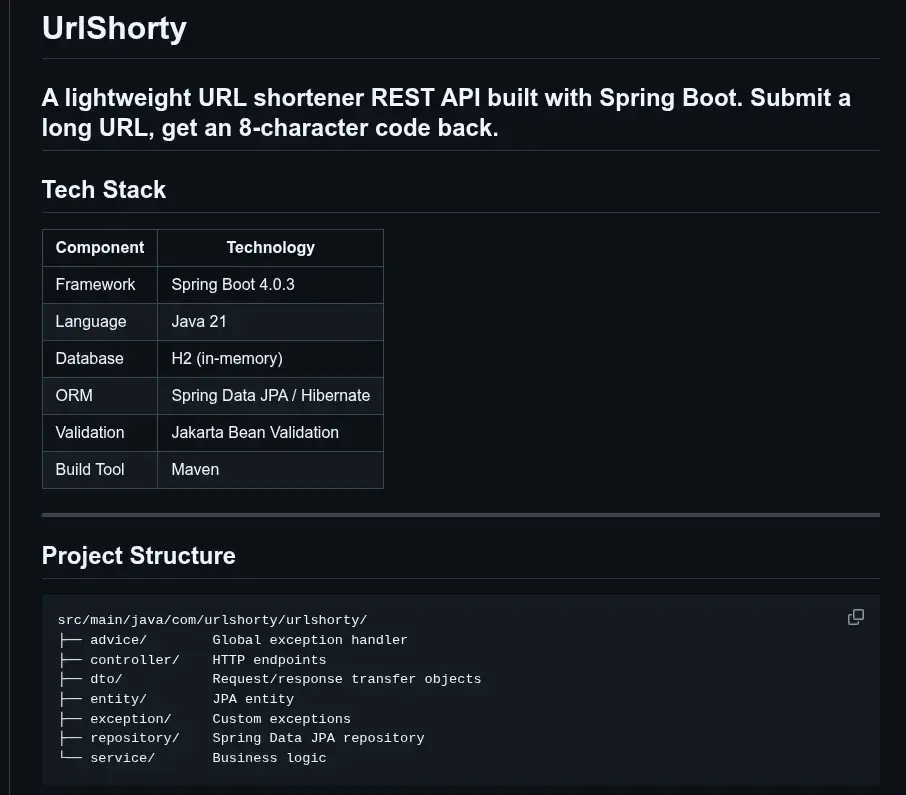

Projects
Whenever I have some free time, I would work on some projects that to further hone my skills. Here's the compilation of all the projects I've done.
 A terminal-based game of Lucky-9
A terminal-based game of Lucky-9
Tech: Java | Docker

A url-shortener apiTech: Java | Spring Boot | PostgreSQL | Docker
 A student library management system
A student library management system
Tech: C# | MySQL | Docker
A retro calculator
Tech: HTML | CSS | JavaScript | Docker
 A fun pixel sketchpad
A fun pixel sketchpad
Tech: HTML | CSS | JavaScript | Docker
Tech: Java | JSON | Docker